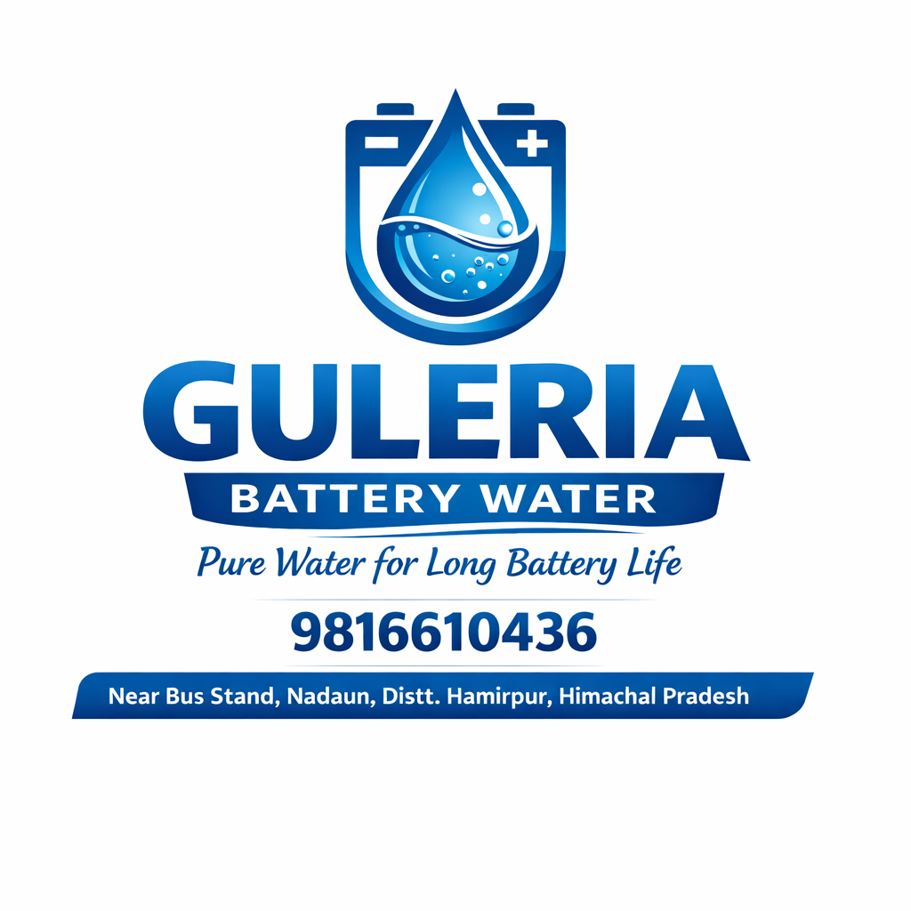

Guleria Battery WaterManufactured with advanced purification machines
Guleria Battery Water is a trusted name in Nadaun and surrounding areas, providing high-quality distilled water for inverters, automotive batteries, and industrial use. We focus on delivering purity, reliability, and performance.
Our manufacturing process uses advanced purification and distillation machines to remove all impurities, ensuring 100% pure battery water that increases battery life and efficiency.
With a strong commitment to customer satisfaction, affordable pricing, and fast delivery, we have become a reliable choice for households and businesses.
₹20
₹80
₹250
📞 9816610436
📍 Baba Dhundeshwar Mahadev Automobile, Gagaal
Hamirpur Road, Nadaun
Opposite Bharat Petroleum Gagaal
Himachal Pradesh - 177033